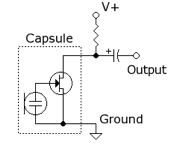
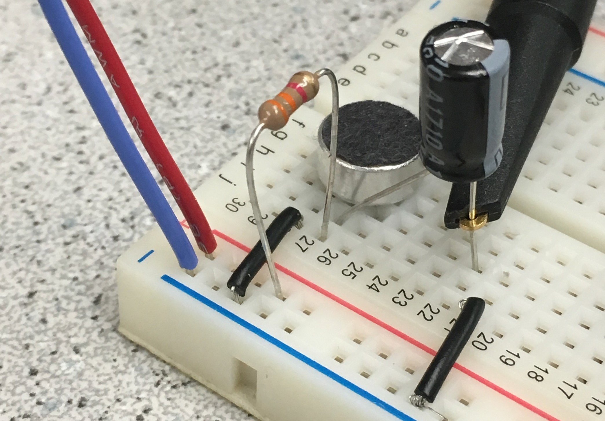
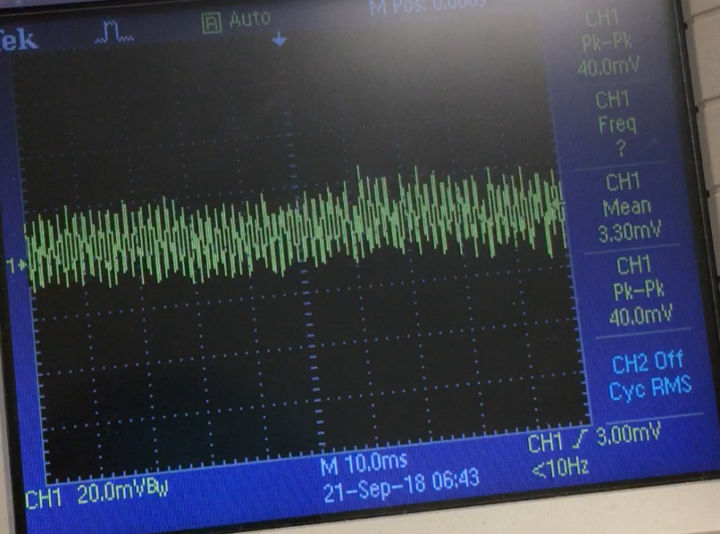
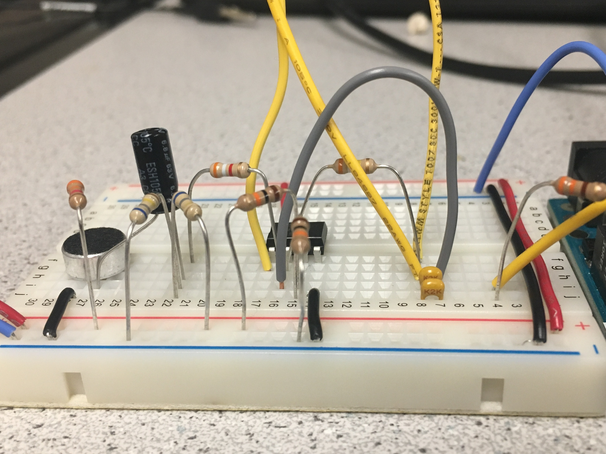
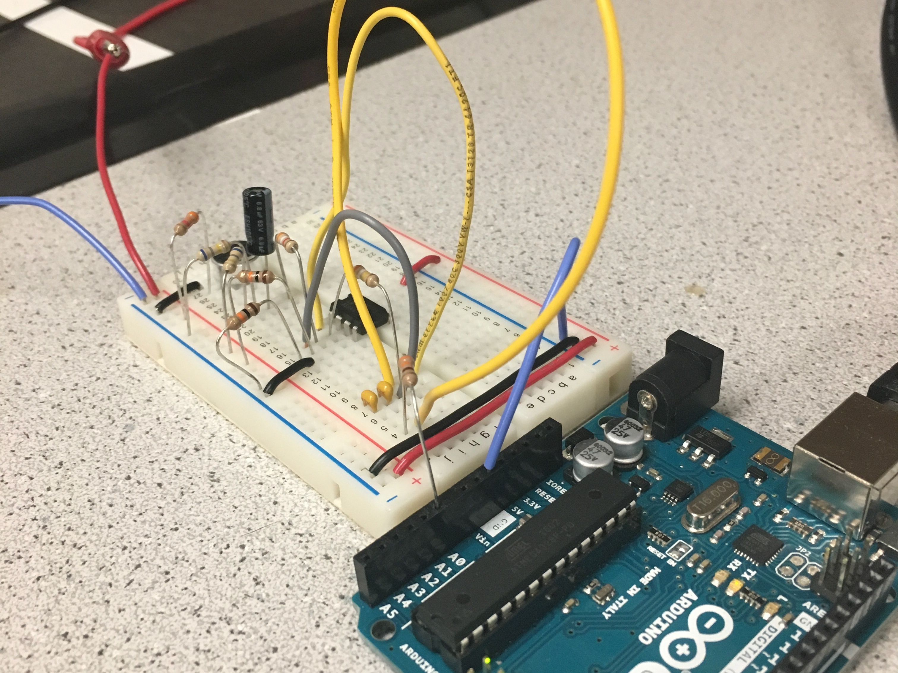
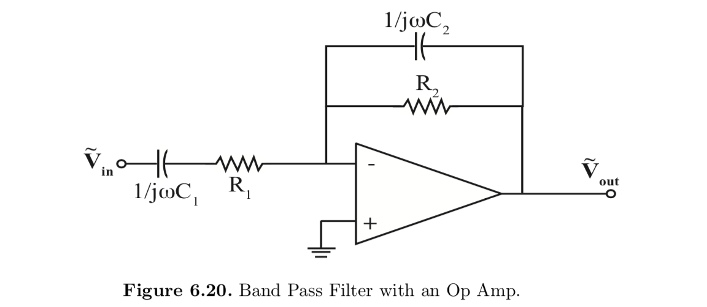
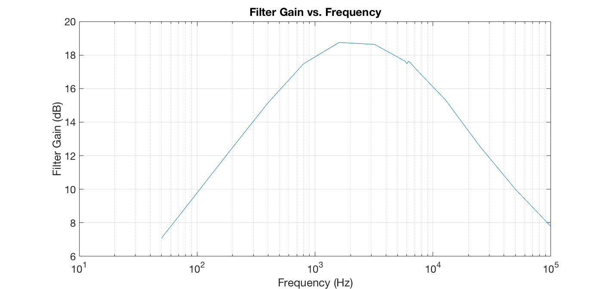
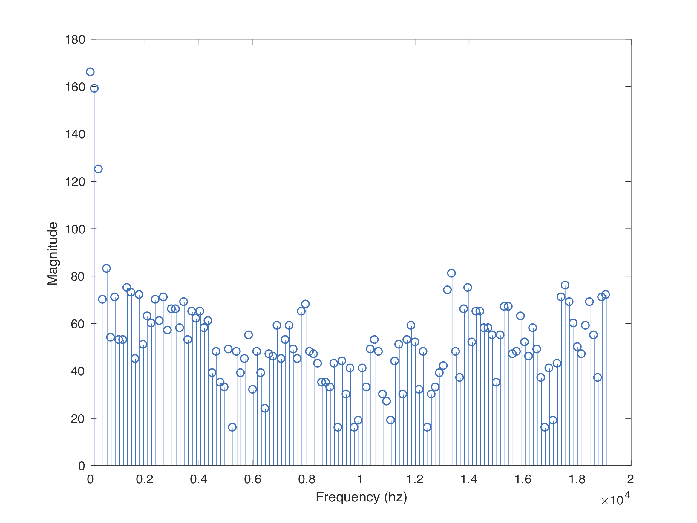
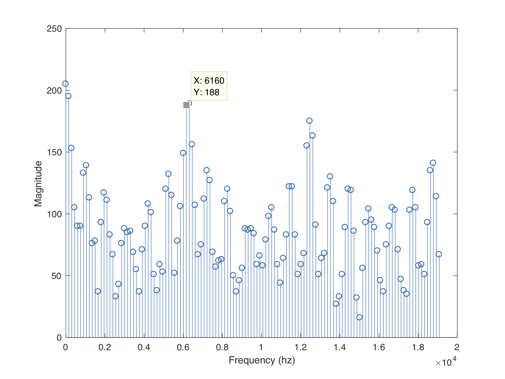
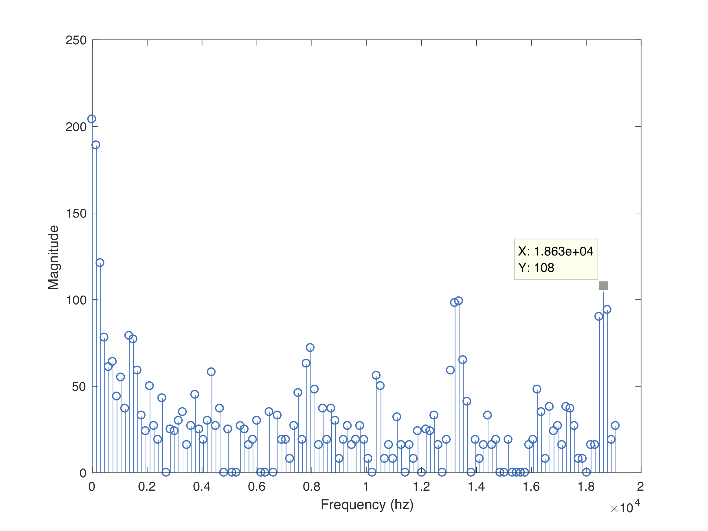

Test and familiarize yourself with the sensors and signal
processing needed for your robot to detect acoustic and
optical signals and interface with the Arduino Uno. The
Acoustic sub-team will work on the microphone circuit, which
will detect a 660 Hz whistle blow, signifying the start of
the maze mapping competition. The Optical sub-team will work
on the IR sensor circuit, which will detect nearby robots
emitting IR at 6.08 kHz and distinguish them from decoys
emitting at 18 kHz.
Prelab
Review documentation for the analog-to-digital converter on the ATmega328 (Arduino microcontroller)
Find a website to generate the 660 Hz tone for testing
Design simple analog amplifying and filtering circuits
Sub-Teams
To begin, we split into two groups of two. Each group progressed
through the lab individually, as described below.
Acoustic Team = Kenneth and Tyler
Optical Team = Brian and Eric
FFT Analysis
Both the Acoustic and Optical parts of this lab used Fast Fourier
Transforms (FFT) to determine the frequency components of the sampled
input signal from the sensors. FFT ALGORITHM EXPLANATION.
The FFT algorithm was implemented using Open Music Labs Arduino FFT
Library. By default, the library takes in an analog signal from Arduino
pin A0, samples it at 256 equally spaced intervals, and returns an array
with 128 values, which represent the magnitude of the frequency content
over a small range of frequencies. Since the FFT of a real signal is
symmetric over zero, only half of the outputs are unique, and thus 128
bins are returned (not 256).
The FFT code can be modified to alter the performance of the ADC
(information from the ADC section of the ATmega328 datasheet [page 305]).
The important ADC characteristics are:
10-bit resolution
ADC clock is dependent on chosen prescalar, which is set based upon last 3 bits of ADCSRA register
The default FFT code sets the ADC prescaler = 32
Prescalar = 128 -> maps to clock of 125 kHz
Prescalar = 64 -> maps to clock of 250 kHz
Prescalar = 32 -> maps to clock of 1 MHz
Prescalar = 16 -> maps to clock of 2 MHz
Prescalar = 8 -> maps to clock of 4 MHz
Prescalar = 4 -> maps to clock of 8 MHz
NOTE - at frequencies higher than 250 kHz the 10-bit accuracy degrades
A normal conversion takes 13 ADC clock cycles
Sampling frequency = clock rate divided by number of cycles
Fs = clock rate/cycles
Fs = 125000/13 = 9615 Hz
To test and visualize the data, we used the example code "fft_adc_serial,"
which prints the FFT magnitude data to the serial monitor. We then copied
the data into Excel, and wrote a simple MATLAB script to read in and plot
the data.
Acoustic Team
GOAL: use an Arduino and the FFT library to detect a 660 Hz whistle blow
First, we built the recommended circuit from the datasheet to connect the microphone to the Arduino
1 × 1 μF Capacitor
1 × 3.3 kΩ resistor


We used the previously mentioned website to generate a 660 Hz tone
Results shown by the oscilloscope indicate a response, although the waveform amplitude is relatively small
DC bias ~3mV
Peak-to-peak ~40mV
That is with the source right next to the microphone
Clearly, we need to amplify the output

Testing the Microphone - Amplifier Circuit
As mentioned earlier, we use the Open Labs Arduino FFT Library for calculating the FFT
To increase the accuracy of our readings, we altered the ADC prescaler value
Original: prescaler = 32 -> maps to clock of 1 MHz
Modified: prescaler = 128 -> maps to clock of 125 kHz
The original code had:
First set line: ADCSRA = 0xe5
Second set line: ADCSRA = 0xf5
Our modified code is:
void setup() {
Serial.begin(115200); // use the serial port
TIMSK0 = 0; // turn off timer0 for lower jitter - delay() and millis() killed
ADCSRA = 0xe7; // set the adc to free running mode, set prescaler=128 (default e5=32)
ADMUX = 0x40; // use adc0
DIDR0 = 0x01; // turn off the digital input for adc0
}
void loop() {
while(1) { // reduces jitter
cli(); // UDRE interrupt slows this way down on arduino1.0
for (int i = 0 ; i < 512 ; i += 2) { // save 256 samples
while(!(ADCSRA & 0x10)); // wait for adc to be ready
ADCSRA = 0xf7; // restart adc --> set prescaler=f7=128 (default f5=32)
Next, we calculated which bin we would expect to find the 660 Hz signal in
ADC clock = 125 kHz
ADC sampling = 13 clock cycles per read
ADC sampling = 125 kHz/13 = 9,615.38 Hz
Number of Samples = 256
Bin Size = 9,615.38/256 = 37.56 Hz/bin
Bin for 660 Hz = 660/37.56 = 17.57 --> Bin 18
For our circuit, we added an active low pass filter with a gain of -10.
First we added two large (680k Ohm) resistors to bias the op amp's inverting input to mid-rail (2.5V)
We also biased the op amp's non-inverting input to mid-rail using two 10k Ohm resistors, so that we only amplified the differential changes due to the microphone.
Lastly, we added a parallel RC tank which acts as a low pass filter with a cutoff frequency of around 742 Hz. Because there was no 550pF capacitor in lab, we added a parallel combination of a 220pF and a 330pF capacitor to give us the desired cutoff frequency.


CIRCUIT TESTING
Integration into software
We created a function "detect_660hz"
Runs FFT function with prescaler = 128
Checks bins 18 AND 19
If magnitudes are both greater than a defined threshold -> returns TRUE
/**
* [detect_660hz]
* OUTPUT = returns TRUE if a 660hz signal is detected by the Arduino,
* & FALSE otherwise
* Uses THRESHOLD to determine whether the tone is playing or not
*/
bool detect_660hz(){
byte * fft_log_out = get_fft_bins();
if (fft_log_out[17] > THRESHOLD && fft_log_out[18] > THRESHOLD) //bins 18 & 19, but 0 based so subtract 1
return true;
else
return false;
}
To test "detect_660hz", we wrote a simple sketch
Every time through the loop, "detect_660hz" is run
To prevent a stray audio source from setting off our robot, a counter is used
If and only if "detect_660hz" returns true 6 times in a row --> then the robot will start
We chose to implement an active band-pass filter with amplification in order to filter out DC and low frequency signals while also filtering out the higher frequency decoy signals
Received IR signals in the pass band (from other robots’ IR hats) are amplified for better ADC quantization range, as well as to detect them from further distances
Cut-off frequencies were intended to be 5 kHz and 7 kHz
Our capacitor and resistor values were:
R1 = 10 Ω
C1 = 2.3 μF
R2 = 3.2 kΩ
C2 = 10 nF
This resulted in cut-off frequencies of 4.97 kHz and 6.92 kHz
The gain of the filter in the pass band was intended to be R2/R1 = 320
Actual results:
Peak Gain: 75 or 19dB
Bode Plot
Shows bandpass filter with 3dB bandwidth 700Hz to 10kHz
18kHz signal is half the power of the 6kHz signal after active filter
Harmonics of the 18kHz signal that would alias into the 6kHz bins come out of the filter with 1/10 the magnitude of a 6kHz signal

Band-pass filter schematic (from Professor Shealy, ECE2100 course notes)

IR filter bode plot
FFT Analysis
As mentioned earlier, we use the Open Labs Arduino FFT Library for calculating the FFT
The default example code sets the ADC in free running mode and polls for each ADC conversion
ADC prescaler = 32
NOTE - this ADC setup is different from the one used by the Acoustic Team
Arduino clock frequency = 16 MHz
Thus, sampling frequency = 38.4 kHz
This is quick enough for the purpose of detecting IR signals, since we are sampling above the Nyquist rate, and the highest frequency IR signal we will see is 18 kHz
However, we may still see harmonics of these signals that are aliased to lower frequencies, since a sinusoidal input to a diode will cause harmonics
Given our sampling rate and decoy frequency, we expect these aliased signals to appear at frequencies that are filtered out by our band pass filter
The FFT code outputs 128 bins
Frequencies of interest are in bins 41 and 42
This corresponds to 6.01 kHz and 6.16 kHz
Results
Silence

Spectrum is pretty sparse
There are some small peaks around 8 kHz and 13 kHz
IR Hat

There is a large peak at 6160 Hz
Bins 41 and 42 correspond to the 6 kHz IR hat signal
When the peaks in these bins are above a threshold, then the IR hat signal is detected
IR Decoy

There is a peak corresponding to 18 kHz on the spectrum
No frequencies are aliased to the bins around 6 kHz
Thus, we can ignore the 18 kHz peak and only observe bins 41 and 42 for IR hat detection